專案說明
在這個專案裡，我們會打造一個 3D 的房間，然後在掃描到卡片的窗戶時，會產生一種「從窗戶外看進去」的 AR 效果。
透過這個專案，你將會學到 Spark AR 內的圖層設定、更深入了解材質的選項，並且學會如何製作遮罩效果（Masking）。
素材下載
本篇專案會用到的素材、卡片模板、以及已經完成的範例專案下載：Project B - Woodhouse.zip
- 如果你對 Spark AR 並不熟，而且還沒看過雪人卡片教學的話，強烈建議先看雪人卡片的教學。雪人卡片教學裡面有一些基礎的操作，在本篇教學中並不會提到。
設定圖片辨識
在這個部分，你需要做幾件事：
- 建立新專案
- 在場景中加入 fixTargetTracker（或在開專案時選擇 Target Tracking）
- 匯入專案要使用的圖片素材
- 把 window 的圖片設定成辨識圖
如果以上步驟都完成了，你應該會看到這個畫面：
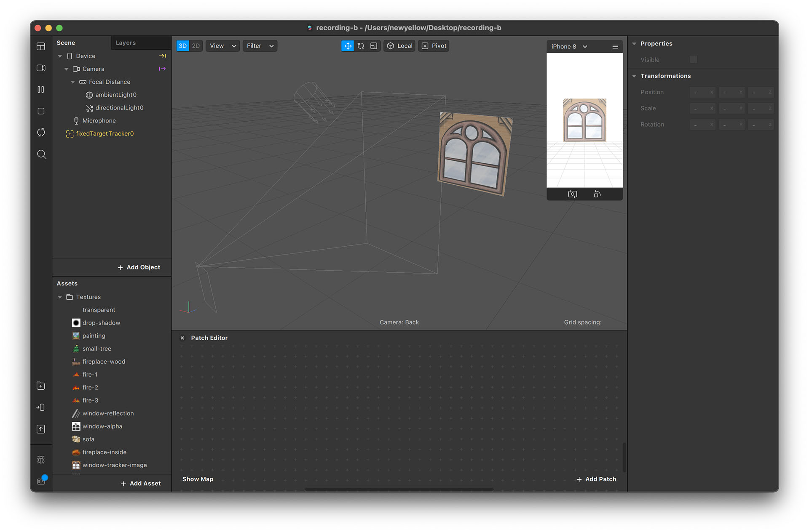以上這些步驟在雪人教學裡面有詳細的步驟教學，如果你對這些東西不熟的話，可以先去看看雪人教學
製作木屋房間
在這個專案裡，我們要呈現「從窗外看進去」的效果，因此，我們需要先建立一個窗內的空間
使用參考圖
為了讓 AR 出來的空間符合實際卡片的大小，我們可以放一張參考圖來協助我們設定房間的空間大小
- 在辨識圖物件底下加入一個 Plane，並且將 whole-building 這張圖設為 Plane 的材質 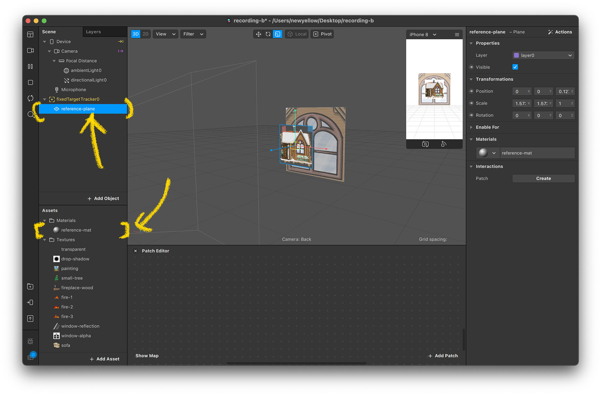
- 調整一下 whole-building 這個 Plane 的物件大小，讓窗戶的部分符合中間辨識圖的部分 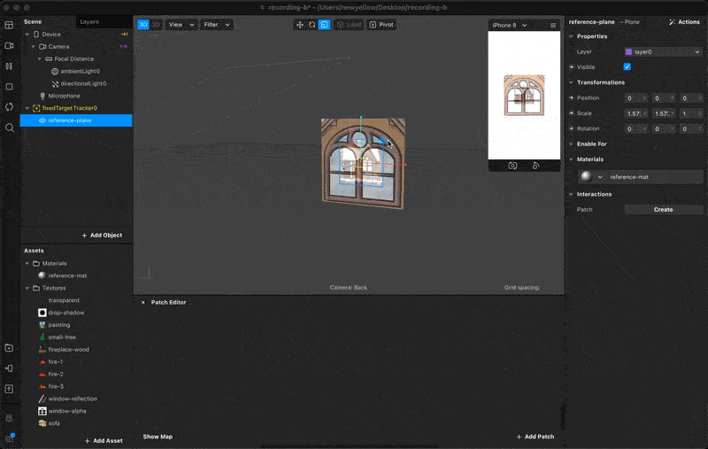
- 把材質的透明度（opacity）設定為 0.6，這樣就可以在編輯器裡看到整棟建築的樣子，這樣待會設定牆壁的時候，就有一個參考的依據

製作牆壁
- 創造一個給牆壁使用的材質 “wall-mat”，並以 “wood-wall-texture” 當作材質貼圖 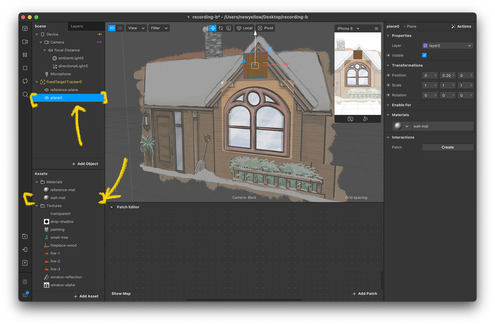
- 在場景內加入 ５ 個 Plane 並把他們拼成一個立方體的樣子，然後放到參考圖後面
- 藉由這張參考圖來設定牆壁，可以讓牆壁的位置和大小更符合實際卡片的樣子，這會讓 AR 的效果看起來比較有真實感


放入家具
- 在素材壓縮檔裡面有一些圖可以當作家具，隨意選些喜歡的，然後幫每一張圖建立一個材質，然後放到房間裡面
- 這有點像是在製作一層一層的剪紙。家具的深度差異（位置 Z 的差異）可以創造一種視差的效果，在用 AR 觀看的時候可以營造出空間感
- 在放置家具的時候，可能會發現一些奇怪的狀況，像是某些圖明明應該是透明的部分，卻把背景遮掉了
- 要解決這個問題，我們需要多了解一點關於 Spark AR 的圖層（Layer）和材質材質的設定


半透明的問題
一張圖「透明」的部分會遮住背後的東西，這是由於 Spark AR 處理「透明」與「半透明」的方式所導致的結果。但這並不是因為 Spark AR 的系統沒有寫好，這是即時渲染的 3D 引擎中常見的狀況。
在 Spark AR 裡面要解決這個問題，有兩種方式，各有其優缺點
使用 Alpha Test
在 Spark AR 裡面，即使圖片的某一部分是完全透明的（透明度 Alpha 為 0），這並不表示這個地方是「空」或是「無」的概念，3D 物件的形狀還是會存在，只是他的顏色是「透明色」。就像底下這張圖，你可以看到我們選取物件時，他的邊框仍然是方形的

在材質裡面有一個 “Alpha Test” 的選項，如果開啟這個選項，表示我們要把「透明」的部分剔除，讓他變成「無」的狀態。就像底下這張圖，當你選取物件的時候，邊框變成了沙發外框的形狀。Alpha Test 的數值代表的是剔除的「閥值」，透明度在這個數值以下的部分會被剔除掉，例如設為 10 表示透明度在 10% 以下的部分會被剔除掉。有些 3D 軟體裡面會稱這種材質為 “cutout” 材質，如其名就像被剪掉一樣的概念。


以這個專案提供的素材來說，只要開啟 Alpha Test，就可以修正大部分的半透明問題
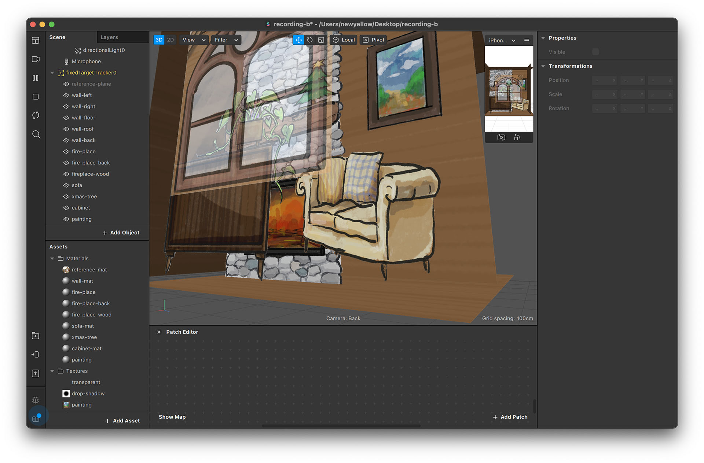在家具的部分，由於圖片大部分都有很稅利的邊緣，而且沒有半透明的部分，因此 Alpha Test 應該符合大部分的使用狀況。但對於有「半透明」的圖，例如沙發的陰影、窗戶的反光等，就沒有辦法使用 Alpha Test。
 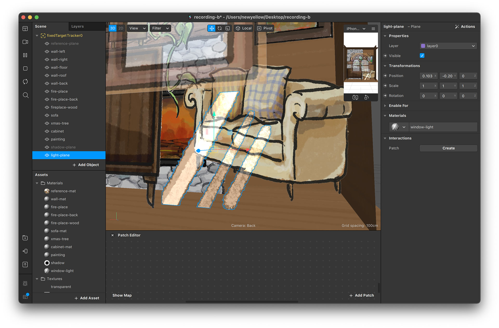
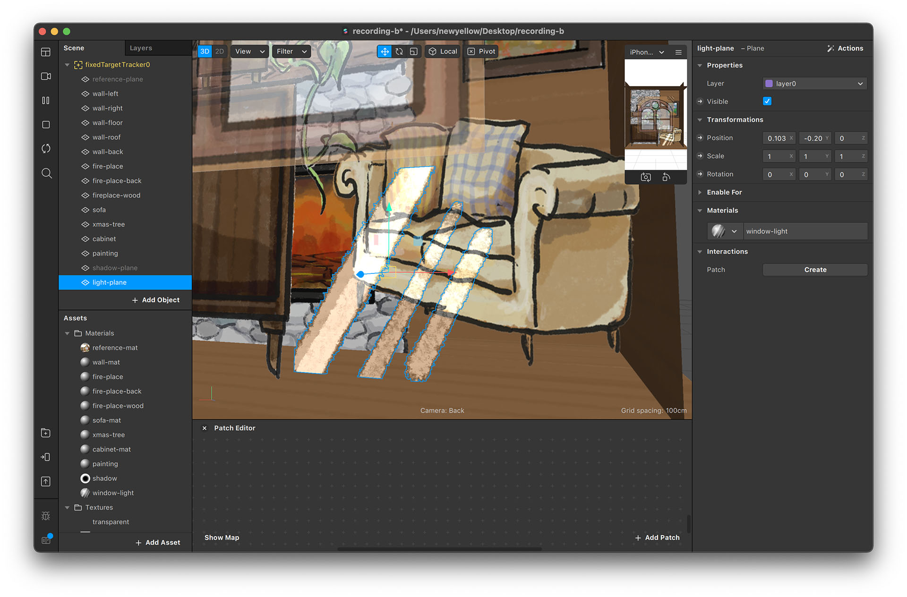
因此，我們也需要了解一下另一種解法
使用圖層設定
圖層（Layer）決定每個物件的渲染（Render）順序。如果物件距離攝影機比較近，該物件的圖層就應該要在比較上面。底下我們會替沙發的陰影和窗戶的反光來設定圖層選項。
- 點選圖層 “Layers” 以切換顯示圖層設定的選項，位置就在場景 “Scene” 旁邊
- 按下 “+ Add Layer” 新增圖層，我們一共會需要 4 個圖層。在名稱上點兩下滑鼠左鍵可以設定圖層的名稱 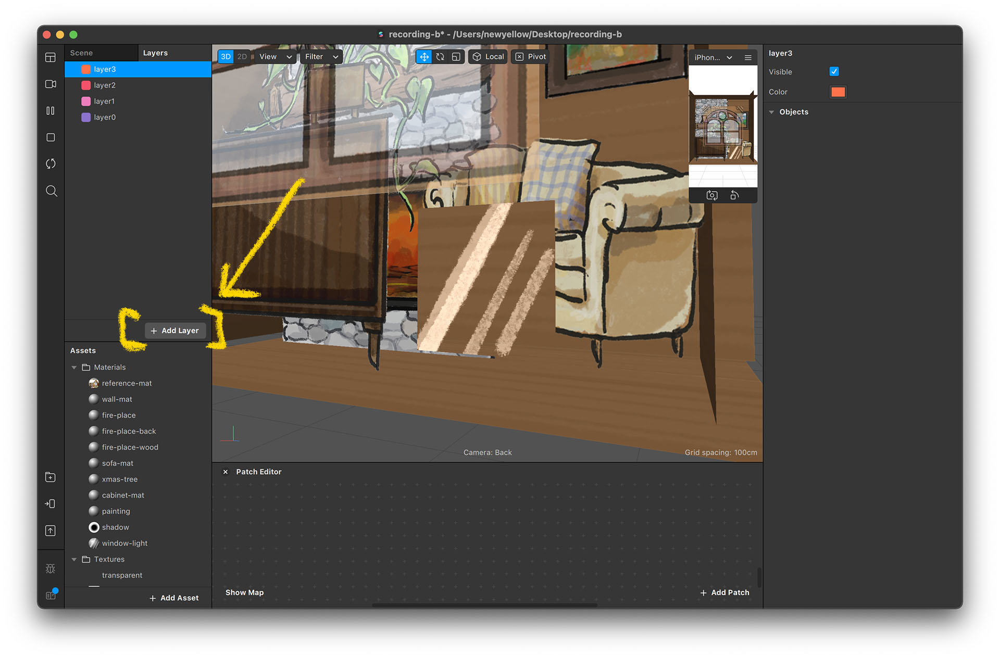
- 用滑鼠左鍵拖拉圖層的名字可以改變排序，讓他們依照以下的順序排列：window-light、furniture、shadow、walls
- 選擇 “wall plane” 物件，然後在右上方有一個 Layer 的地方可以設定圖層。把圖層設定為 walls
- 可以一次選多個物件來批次設定圖層 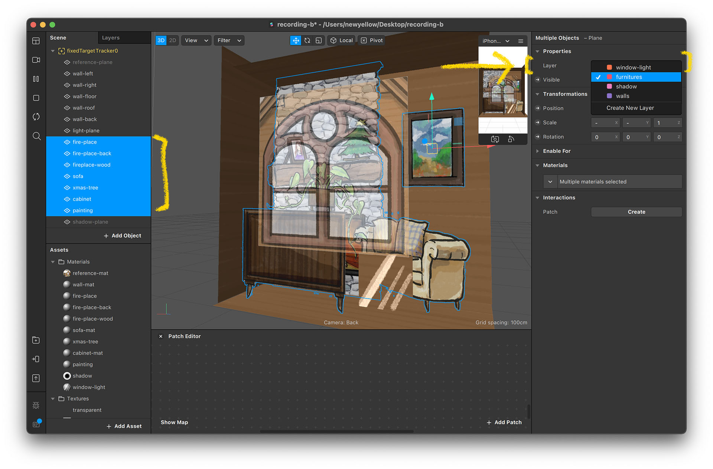
- 把所有的牆壁物件的圖層都設為 walls，所有家具圖層設為 furniture，沙發的陰影設定為 shadow，窗戶的反光設定為 window-light
- 現在窗戶的反光和陰影應該都能正確呈現他們半透明的樣子


*透明度與混合模式
在材質裡面還有一個混合模式（Blending Mode）可以設定，這個選項定義了這張圖如何和「背後」的影像作用。例如 Multiply 會疊加深色的部分，沙發的陰影就可以設定為 Multiply；而 Additive 則是讓亮的部分更亮，因此窗戶的反光可以設定為 Additive。你可以隨意試試看切換不同的 Blending Mode 來看看效果如何。.

如果你覺得陰影太暗或是反光太亮，你也可以再調整它的透明度（Opacity）
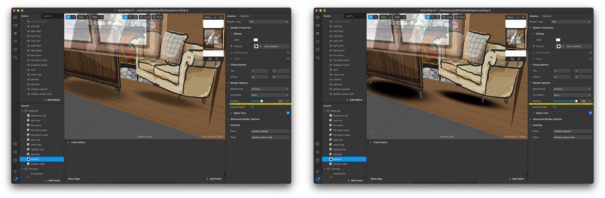混合模式是電腦圖學領域常見的一個功能，如果想了解更多，可以參考 Adobe 關於 Blending Mode 的說明：Adobe - Blending Modes
如果你覺得 Spark AR 內建的 Blending Mode 不夠多，你想要更多類似 Photoshop 裡面有的其他 Blending Mode，你可以試試看 Spark AR 圖學高手 positlab 的開源專案 Photoshop blend modes：https://github.com/positlabs/spark-blend-modes
動畫火焰
在 Spark AR 裡面你也可以製作逐格動畫。在這個專案裡，我們準備了火焰的序列圖以供練習
- 在 Assets 視窗點選 “Add Asset”
- 選擇 “Animation Sequence” 然後系統就會產生一個新的檔案，把它命名為 “fire-animation” 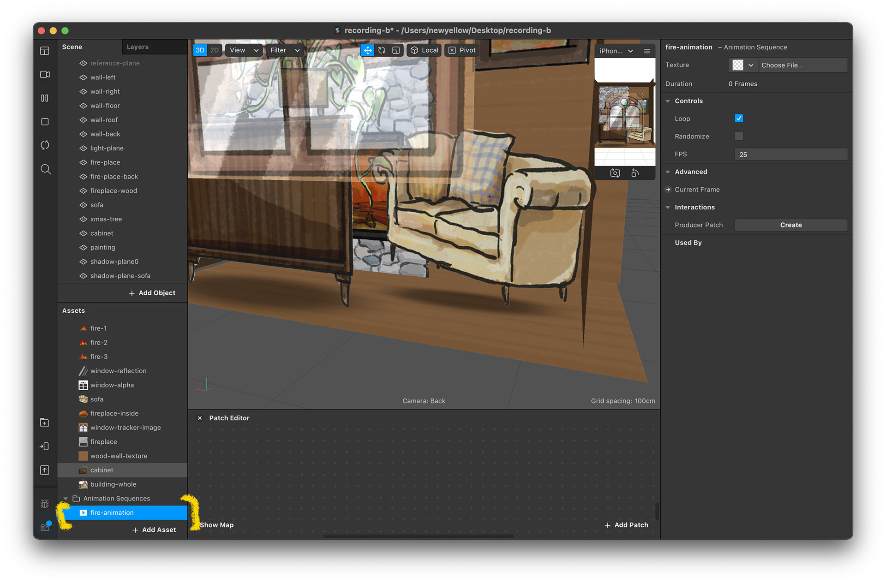
- 選取 fire-animation 後，在右邊的視窗點 “Choose File” 並選擇選取火焰的序列圖檔（按住 Shift 多選）
- 成功後，會看到系統產生了一個 fire-[1-3] 的序列檔 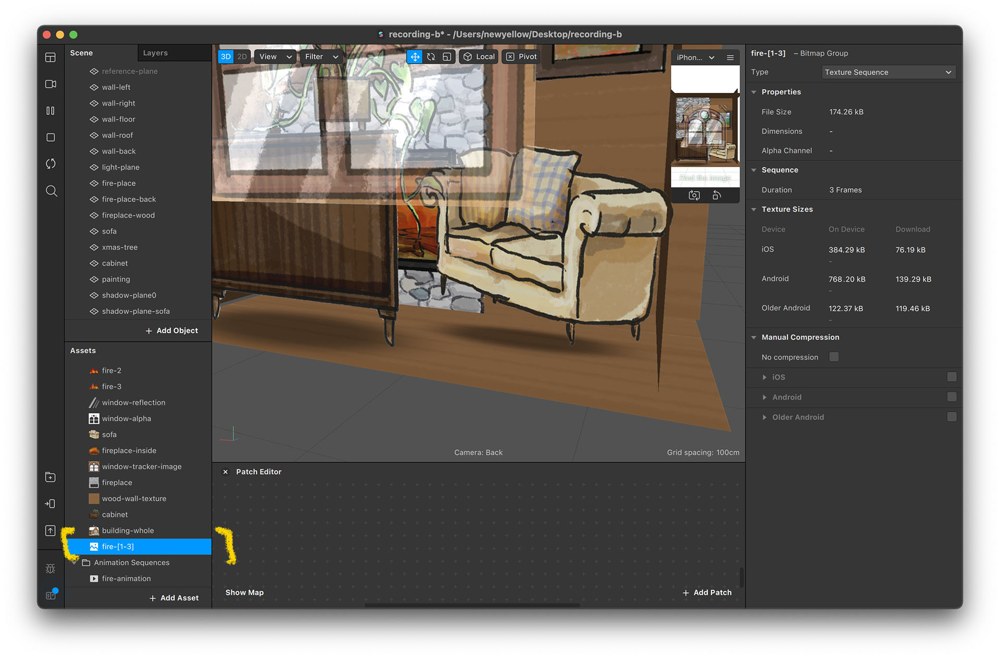
- 建立一個材質，並把圖片設為 “fire-animation”，然後就可以看到會動的火焰囉 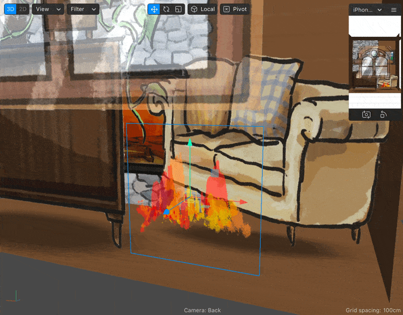
- 你可以設定 “fire-animation” 的 FPS 數值來改變序列圖的播放速度


設定光源
既然有火在房內燃燒，感覺光應該也要隨著火光閃爍才對。接著我們就要來設定光源的部分
在場景內加入燈光
- 刪除系統預設的燈光 directionalLight0 物件（這個物件是在開新專案的時候自動產生的）
- 選 ambientLight0 並把 Intensity（光源強度）設為 30
- 加入一個 “Point Light”（點光源）物件，並把他設為 fixedTargetTracker0 的子物件
- 把點光源物件的位置移到火爐前面 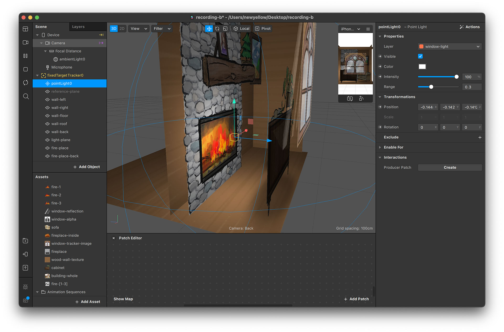
- 把點光源的 intensity 設為 200（用鍵盤輸入數值的話可以超過 100）然後 range（範圍）設成 0.5


設定光源動畫
- 點擊燈光 Intensity 旁邊的小箭頭，把 Intensity 的數值 Patch 加入到 Patch Editor 裡。另外加入一個 Transition Patch、一個 Loop Animation Patch。這就跟上一個雪人專案的動畫部分差不多
- 預設的 Transform Patch 一次會對三個數值做變化（x, y, z），但光的強度 Intensity 只有一個數值。點一下 Transition Patch 底下的 Vector3 小方塊，然後把類型改為 Number
- 把這幾個 Patch 接起來，然後可以試試看這種不同的 Curve 和 Intensity 數值，看看怎麼樣比較會有火光閃爍的感覺
- 你也可以另外設定 Ambient Light 的光源動畫。因為這兩個光源應該是同步的，所以你可以使用同一個 Loop Animation Patch 來驅動動畫


*光源的類型
如果想要了解不同類型的燈光之間的差異，可以參考官方的教學：Lights in Spark AR Studio
測試房間效果
現在房間已經完成了，可以把濾鏡放到手機裡測試看看。用手機看應該會像這樣：

嗯 ... 感覺好像怪怪的，牆壁感覺好像變成透明的。接下來，我們就要製作遮罩（Mask）來解決這個問題！
設定遮罩
在 AR 裡面，因為相機通常沒有現實世界中的深度資訊，所以對系統來說，相機拍到的只是一張平平的照片，所以虛擬的 3D 物件總會在畫面的最上層（背景都會被蓋住）。如果想要讓某些現實空間的影像蓋住虛擬影像，就需要使用遮罩
遮罩不是一個物件，而是一種技巧、概念的稱呼，把某個物件的某部分給遮掉的意思。在 Spark AR 裡面，我們可以透過圖層和材質的設定，來實現遮罩的功能
製作牆壁遮罩
- 建立一個 Plane 並命名為 “mask-plane”，然後也建立一個 “mask-mat” 材質 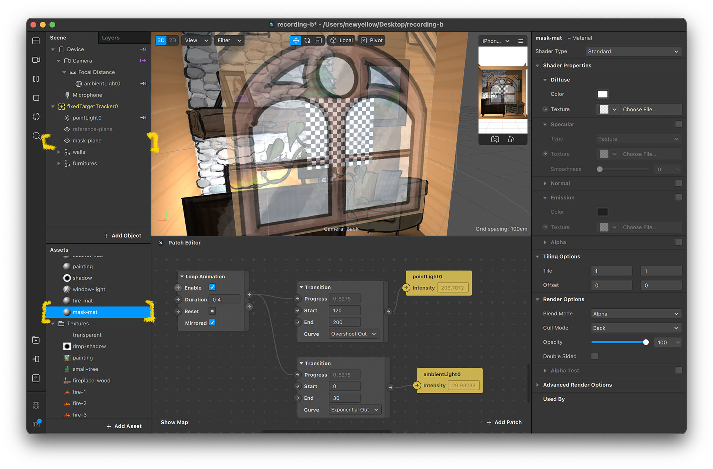
- 把材質的 Shader Type 設定為 flat，並把 opacity 設成 0 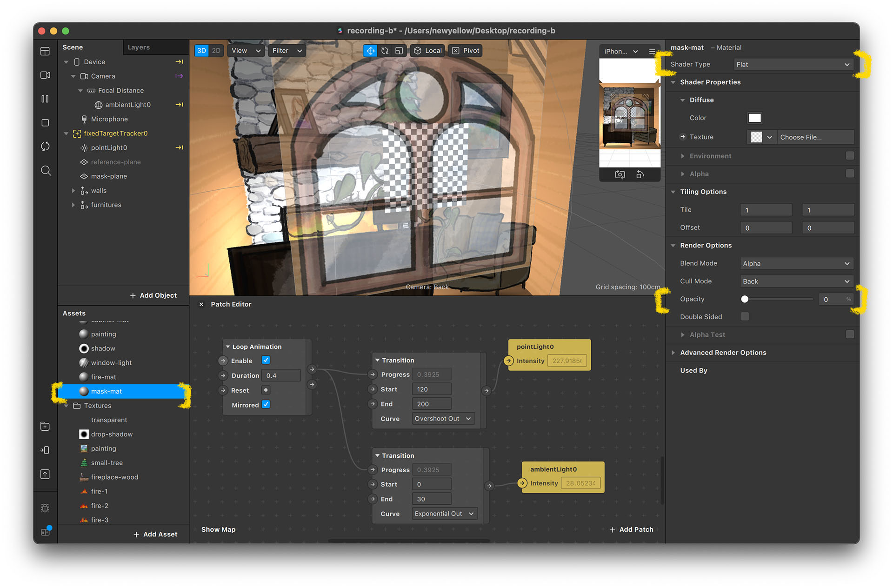
- 點選 “mask-plane” 並在設定圖層 “layer” 的地方選 “Create New Layer”
- 系統在此時會建立一個新圖層，並把這個物件設為這個新的圖層
- 切換到圖層視窗，並把剛剛建立的那個圖層放到最底下
- 把這個圖層命名為 “mask”
- 回到場景視窗，應該可以看到 mask-plane 變成透明的了，而且在 mask-plane 背後的部分都會消失不見
- 複製 mask-plane 並把他們放在 fixedTargetTracker 旁邊，只留下中間窗戶的部分，蓋住房子的其他地方


設定窗戶遮罩
- 窗戶的遮罩有一點不一樣，因為窗戶的形狀是透過圖片設定的，而不是整個方形，所以我們需要在材質的地方做一些額外的設定 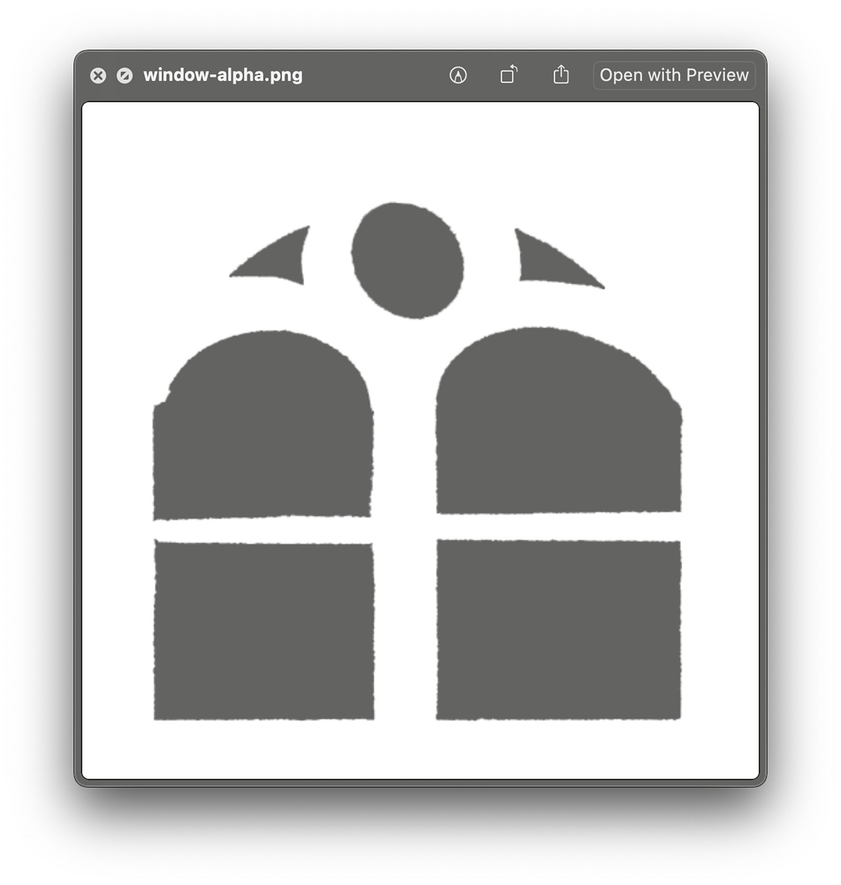
- 建立一個材質並命名為 “window-mask-mat”
- 建立一個新的 “window-mask-plane” 物件並把材質設為 window-mask-mat
- 移動並縮放 window-mask-plane 讓它剛剛好符合中間辨識圖的大小。要完美符合的話，可以直接把 Scale 設為 3, 3, 1
- 設定材質，把 “Alpha” 部分的圖片設為 “window-alpha”
- 勾選 “Alpha Test” 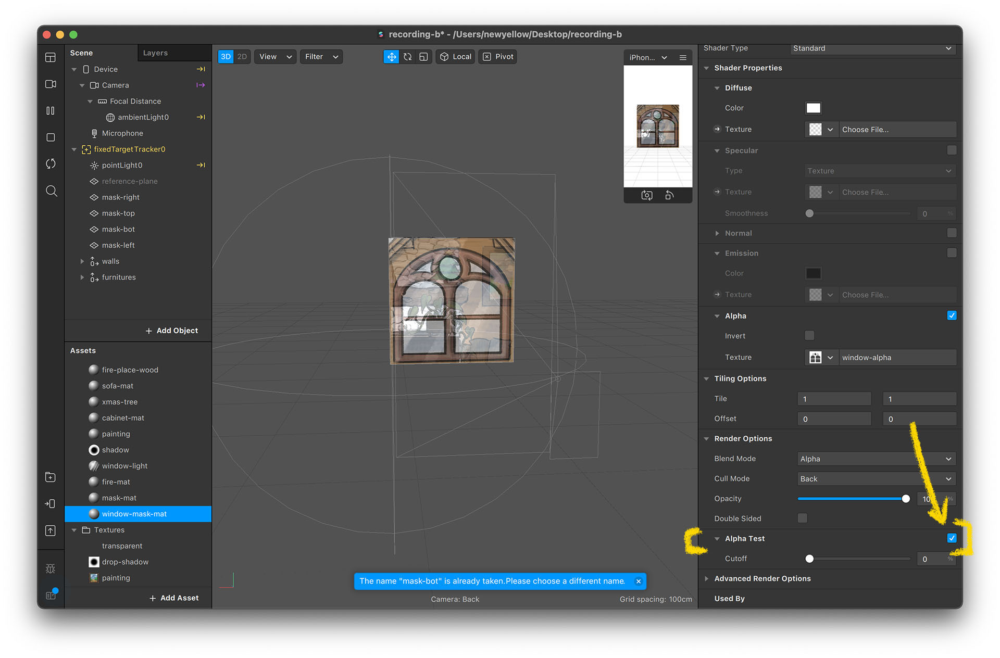
- 把 Opacity 設成 1，然後 Alpha Test 的 Cutoff 設成 0
- 把 window-mask-plane 的圖層設為 “mask”
- 如果成功的話，應該可以看到窗戶部分的顏色有一些不一樣，窗戶的牆壁部分應該有正確遮住背景
- 把濾鏡傳到手機測試看看，如果設定正確的話，應該會像這樣：


製作到這邊，這個專案就完成囉！
現在應該能看到像是影片這樣的效果：